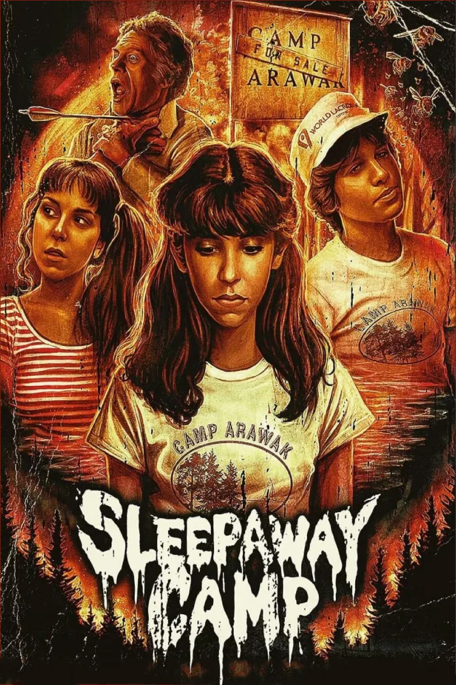
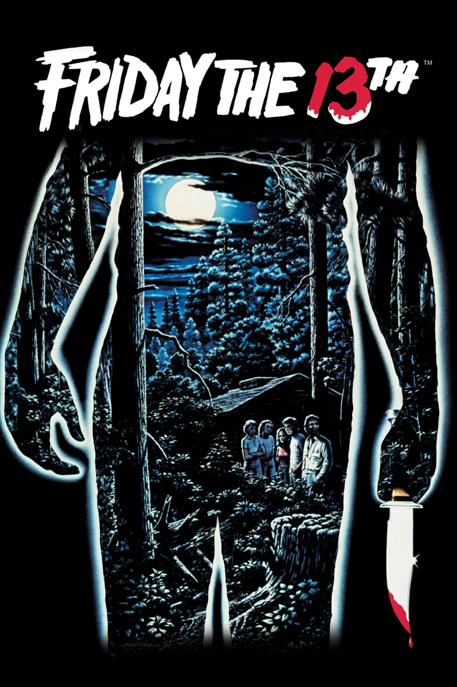
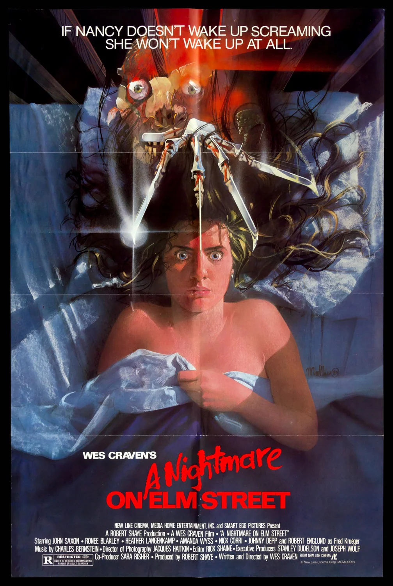
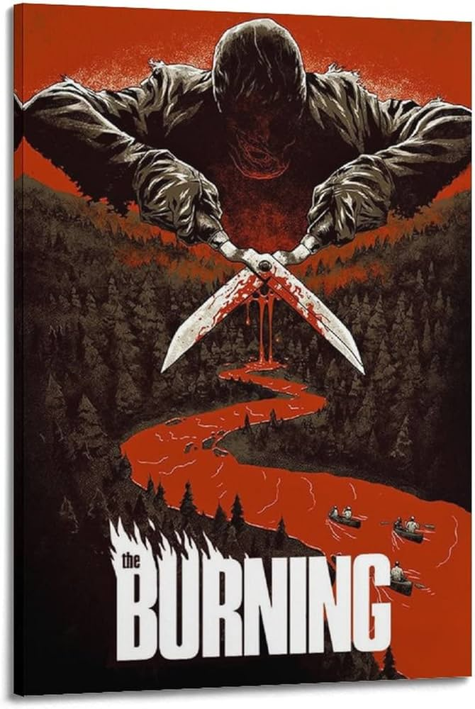
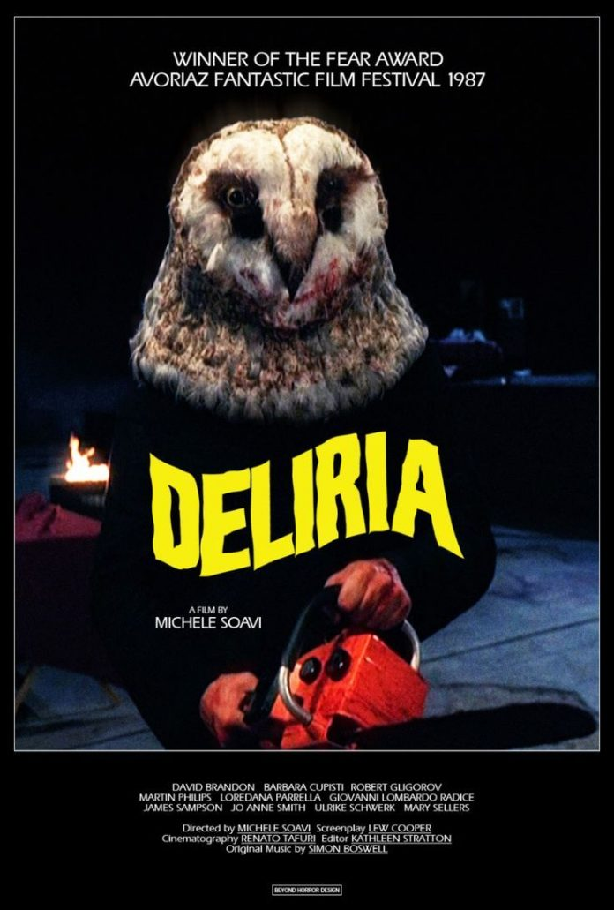
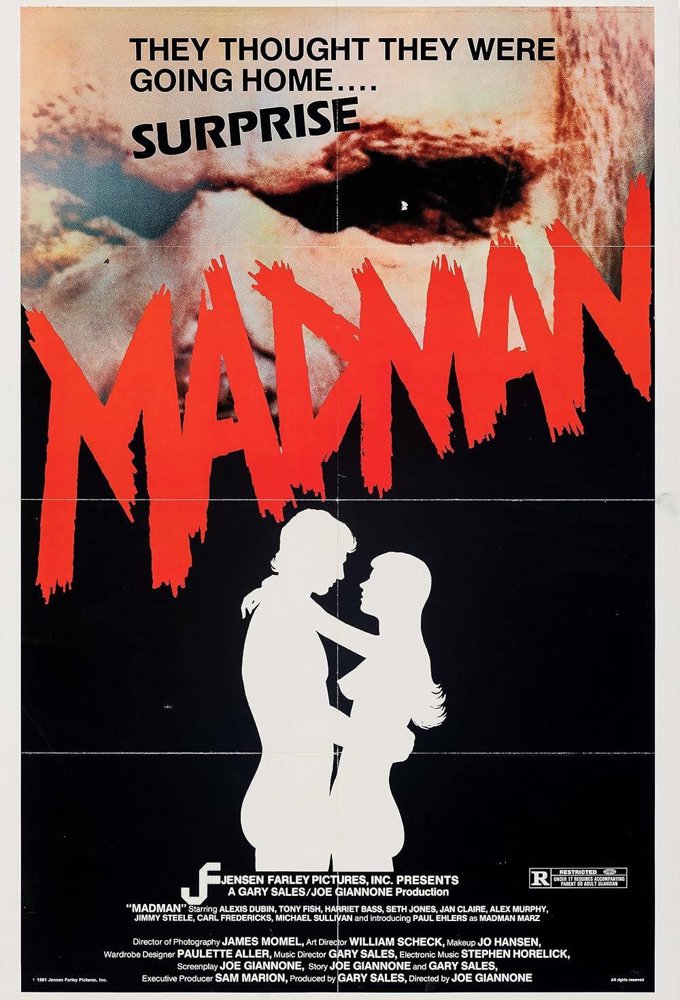
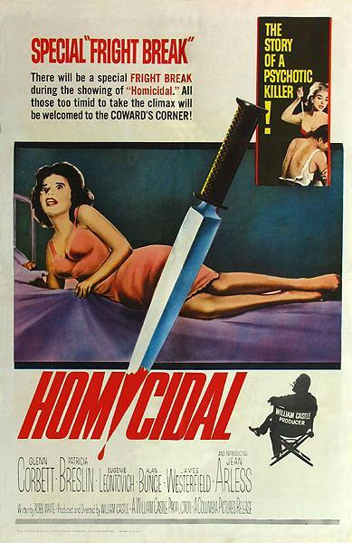
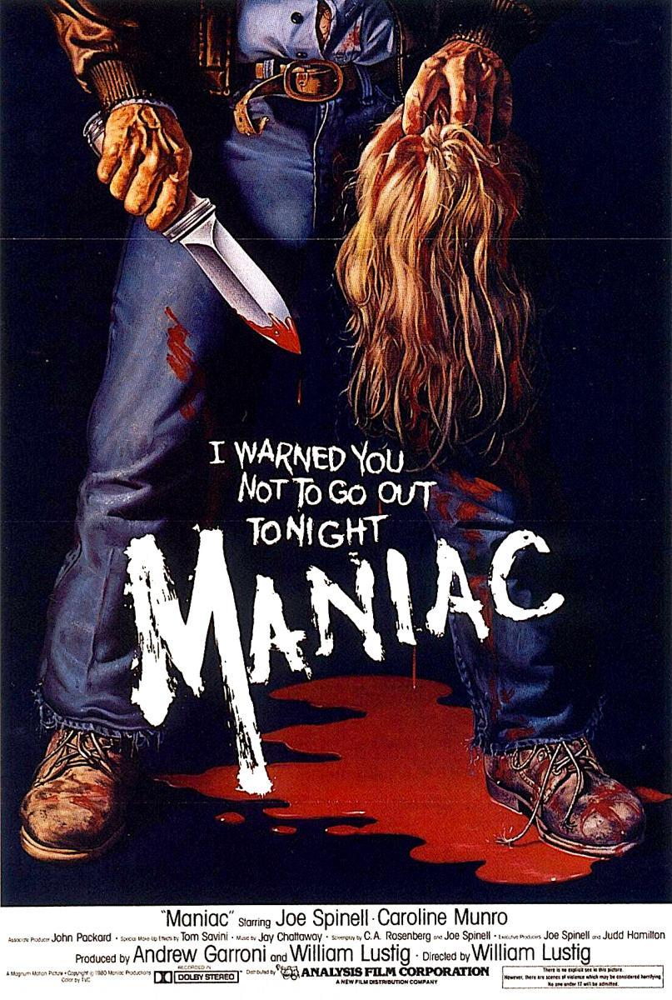

Sleepaway Camp (1983)
Sinopsis:En Sleepaway Camp (1983), Angela, una joven tímida, asiste a un campamento de verano tras la muerte de su familia. Lo que comienza como una experiencia normal se convierte en una pesadilla cuando brutales asesinatos aterrorizan a los campistas, culminando en un final sorprendente y escalofriante.

Friday the 13th (1980)
Sinopsis: En este clásico slasher, un grupo de jóvenes trabajadores de un campamento de verano son asesinados por un misterioso asesino que busca vengar la muerte de su hijo en el campamento. La película es famosa por su atmósfera tensa y por presentar a Jason Voorhees, uno de los iconos más duraderos del género.

A Nightmare on Elm Street (1984)
Sinopsis: Un grupo de adolescentes comienza a ser acosado por Freddy Krueger, un asesino con un guante de cuchillas que mata a sus víctimas en sus sueños. La película, dirigida por Wes Craven, es famosa por su combinación de horror psicológico y físico, y se convirtió en una franquicia icónica en el género slasher.

The Burning (1981)
Sinopsis: La historia comienza en Camp Blackfoot donde unos niños tratan de hacer una broma al conserje, pero la situación se sale de control y da como resultado uque el Cropsy quede gravemente herido y desfigurado enfocado en buscar venganza.

Mil gritos tiene la noche (1982)
Sinopsis: Una asesino se dedica a matar a jóvenes universitarias con una motosierra en un campus de Boston para crear un rompecabezas humano hecho con partes de los cuerpos de sus víctimas. Sin embargo, un policía tratará de detenerlo.
.jpg)
Deliria (1987)
Sinopsis: Un grupo teatral ensaya un drama inspirado en hechos reales. Todo transcurre con normalidad hasta que uno de los actores aparece muerto. El sádico asesino interpretado en la obra se ha escapado de la institución mental en la que permanecía.

Madman (1981)
Sinopsis: En un campamento de verano en el bosque, Max uno de los monitores, decide agasajar a los campistas y los otros monitores con un cuento aterrador de un asesino en serie local, loco Marz. Cuando se pronuncia su nombre, algo inquietante ocurrirá.

Intruder (1989)
Sinopsis: En su última noche en el supermercado, antes de que el local sea vendido, los empleados se preparan para cerrar el lugar. Lo que no saben es que también será su última noche de vida, ya que un asesino comenzará a cazarlos uno por uno.
.webp)
Popcorn (1991)
Sinopsis: Un grupo de jóvenes estudiantes se encuentran celebrando un festival donde se está llevando a cabo la visualización de las películas de horror de la década de los años 50. Todo será diversión hasta que descubran que el anfitrión de este festival es un maníaco asesino.
.jpg)
Twisted nerve (1968)
Sinopsis: relata la historia de un joven perturbado, Martín, que pretende, bajo el nombre de Georgie, hacerse pasar por un retrasado mental con el fin de estar cerca de Susan, una chica con la que se ha encaprichado, matando a aquellos que se crucen en su camino.

Homicidal (1961)
Sinopsis: Emily, le propone matrimonio al botones de un hotel para poder llegar hasta el juez de Paz. Una vez logrados sus planes, lo asesina, huye y se refugia en la casa de una anciana paralítica y muda a la que cuida. La policía no logra dar con ella, pero la sobrina de la anciana y su novio empiezan a sospechar de ella.

Peeping Tom (1960)
Sinopsis: La película gira en torno a, Mark Lewis, filma su encuentro con una prostituta mediante una cámara escondida bajo su abrigo, la sigue hasta su casa y la asesina brutalmente.
Después se traslada a su hogar para ver el resultado de la filmación...

Nightmares in a Damaged Brain (1981)
Sinopsis: relata la historia de George Tatum (Baird Stafford) viaja de vuelta a su casa en Florida.
Durante el camino, tiene una pesadilla recurrente sobre un violento incidente de su niñez, el cual lo obliga a asesinar...

Blood Feast (1963)
Sinopsis: Misteriosos asesinatos se suceden en un pueblo norteamericano, donde todas las víctimas son bellas mujeres a las cuales se les ha amputado una extremidad de su cuerpo. La investigación policial lleva la pista hasta el empresario gastronómico egipcio Fuad Ramses donde conocen sus horripilantes intenciones...

My Bloody Valentine (1981)
Sinopsis: Durante el día de los enamorados se produce un accidente en una mina de Canadá, dejando varios muertos. Sin embargo, sólo uno sobrevivió, Harry Warden.
20 años después, el alcalde decide volver a abrir el baile de los enamorados. Pero eso no fue muy agradable para los agentes de policía y cualquier persona que reciba unos paquetes extraños que contienen corazones humanos.

The Bird with the Crystal Plumage (1970)
Sinopsis: Este film italiano se centra en un escritor estadounidense busca a un escurridizo criminal después de presenciar un intento de asesinato a través de las puertas de vidrio de una galería de arte en Roma.

Dressed to kill (1980)
Sinopsis: Kate, una mujer frustrada en la mayoría de los aspectos visita a su psiquiatra para obtener consejos de un profesional sobre cómo mejorar su inactiva vida sexual.
De regreso a casa, tiene un fortuito encuentro con alguien que le parece muy familiar.

The Hitcher(1986)
Sinopsis: Una noche de tormenta, el joven Jim, que transporta un coche de lujo desde Chicago a California para entregárselo a su dueño, sintiéndose somnoliento, recoge a un misterioso sujeto en la carretera, en medio de la conversacion este hombre le confesará algo impactante a Jim...

Maniac (1980)
Sinopsis: La historia se centra en Frank que, debido al maltrato sufrido en su infancia esto le causa secuelas que provocan que mate a mujeres y use sus cueros cabelludos para vestir a sus maniquíes resguardados en su asqueroso apartamento. Es su único contacto con el mundo fuera hasta que conoce a una guapa fotógrafa. Pero... ¿puede un maníaco formar simple amistad?

Dark Night of the Scarecrow (1981)
Sinopsis:En un pequeño pueblo del sur, Charles Eliot Bubba Ritter, un hombre con problemas mentales, es asesinado por una turba liderada por el cartero Otis Hazelrigg, quien cree erróneamente que él atacó a la joven Marylee Williams. A medida que ocurren misteriosas muertes entre los justicieros, se revela que Bubba busca venganza desde su tumba.

The Abominable Dr. Phibes (1971)
Sinopsis: Después de que un equipo de cirujanos acabara con la vida de su esposa, el doctor Phibes, asesina a algunos de ellos utilizando terribles métodos extraídos de textos antiguos. Un detective le sigue la pista con la ayuda del doctor Vesalius, el jefe del equipo médico que operó a la mujer de Phibes.